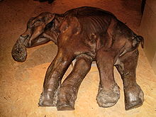

Características
Su nombre proviene de su gruesa capa de pelo lanudo de hasta noventa
centímetros de largo, dispuesto en forma similar al pelambre del
actual buey almizclero. Bajo la piel poseía una capa de grasa de
ocho a diez cm de espesor que fortalecía su adaptación al frío.
Sus orejas de treinta cm de longitud, eran mucho más pequeñas que
las de los elefantes actuales (las de un elefante africano alcanzan
180 cm). Presentaban un abombamiento en forma de cúpula sobre el
cráneo y una alta joroba sobre los hombros.
Sus dientes estaban adaptados a las plantas de la tundra, pero habitaba
también la estepa herbosa, y la presencia de ramas de árboles en los
estómagos de los ejemplares encontrados indica que también recorrían
los bosques.
Evolución
Dado que se conocen muchos restos de las distintas especies de mamuts de diferentes lugares, ha sido posible reconstruir la historia evolutiva de este género a través de estudios morfológicos. Las especies de mamuts pueden ser identificadas por el número de bordes de esmalte en sus molares; las especies más primitivas tenían pocos bordes, y su cantidad se incrementaba gradualmente cuando las nuevas especies evolucionaban y reemplazaban a las anteriores. Al mismo tiempo, las coronas de los dientes se volvían más largas, y los cráneos se volvían más altos de arriba abajo y más cortos lateralmente para acomodar estos dientes. Se conocen individuos y poblaciones que muestran características morfológicas transicionales entre cada una de las especies y sus sucesoras, y que las especies primitivas y avanzadas coexistían hasta que las primeras desaparecieron. Las distintas especies y sus formas intermedias pueden ser denominadas "cronoespecies". Se han propuesto también muchas subespecies intermedias, pero su validez es incierta; estas pueden ser consideradas como formas primitivas de una especie derivada, o formas derivadas de una especie primitiva.
Extinsión
La extinción del mamut lanudo es posiblemente la mejor estudiada671011151618192223 dentro del Evento de extinción del Cuaternario que supuso la extinción de dos tercios de todos los géneros de mamíferos y la mitad de la megafauna terrestre.39 Su extinción fue escalonada y se produjo miles de años antes en las áreas continentales que en las islas, en un proceso largo en el tiempo que comenzó a finales del Pleistoceno y terminó bien entrado el Holoceno, con los restos más recientes de la especie datados ya en tiempos históricos. El mamut lanudo desapareció de Europa hacia el 10000 a. C., mientras que en el sur de Siberia aún subsistía en el 8000 a. C..34 Su extinción en islas no colonizadas por el ser humano se produjo mucho más tarde: en la isla de Saint Paul (Alaska) estuvo presente al menos hasta el 6000 a. C. El último remanente conocido de esta especie sobrevivió en la isla de Wrangel hasta aproximadamente el 1700 a. C., más de 6000 años después de su extinción en los continentes

Los mamuts lanudos que habían llegado a Norteamérica por Beringia desaparecieron junto al mamut colombino y la mayor parte de la megafauna norteamericana de la época36 entre el final del Pleistoceno y el inicio del Holoceno. Los restos de mamuts más recientes que han sido datados en el continente americano tienen alrededor de 11.000 años.
Hipótesis sobre la extinción del mamut lanudo
Aunque muchos científicos siguen divididos acerca de si fue la caza excesiva, los cambios climáticos o una combinación de ambas lo que llevó a la extinción a los mamuts lanudos, hoy en día la hipótesis de la caza excesiva es la que presenta una mayor consistencia y goza de mayor aceptación,12356789 sin que se haya desechado definitivamente el posible efecto sinérgico del cambio climático como factor secundario
Hipótesis de la extinción por caza excesiva
Así, el único factor conocido común a todas estas extinciones de mamuts lanudos a lo largo de más de 8000 años aparentemente sería la irrupción escalonada del Homo sapiens en sus distintos territorios.53 Basándose en estos datos, la hipótesis de la caza excesiva o hipótesis de las causas antrópicas atribuye la extinción del mamut lanudo a la depredación por parte de los humanos.
Puntos débiles de la hipótesis del cambio climático para explicar su extinción
La hipótesis del cambio climático presenta además varios puntos débiles que están siendo señalados por numerosos científicos en los últimos años,35 destacando en el caso particular del mamut lanudo varios hechos que esta hipótesis no puede explicar:
La megafauna terrestre ha desaparecido a lo largo de los últimos 55.000 años de la mayor parte del planeta, pero lo ha hecho antes en unos continentes que en otros, y antes en los continentes que en sus islas, con diferencias contrastadas de varios miles de años en el caso de los mamuts lanudos entre Siberia/Alaska y sus respectivas islas.3 Este hecho no solo no cuadra con un cambio climático, sino que se contradice con lo esperado para este tipo de eventos: a menor espacio para migrar a climas más favorables, y a menor tamaño de las poblaciones insulares, y por tanto menor variedad genética para adaptarse a los cambios, la probabilidad de extinción de la especie es mucho mayor. En una extinción provocada por un cambio climático, los mamuts lanudos de la isla de Sant Paul y de la isla de Wrangel en Siberia debieron extinguirse antes que los continentales, y sin embargo sobrevivieron 5000 y 8200 años más, respectivamente, coincidiendo en datación los últimos restos de mamuts lanudos con los primeros restos humanos conocidos en las islas.3
El segundo hecho característico y único de las extinciones masivas del Cuaternario es que las extinciones afectan de forma muy específica a la megafauna. Los mamuts lanudos eran capaces de recorrer enormes distancias a lo largo de su vida, y más aún en el caso de las poblaciones norteamericanas y el extremo oriente asiático (que habrían sido los más afectados por el cambio de ciclo glacial de acuerdo con esta hipótesis), porque todas las grandes cordilleras americanas y del Extremo Oriente van de norte a sur y permitían perfectamente la migración (esta es la causa de que algunos géneros de plantas que se extinguieron en Europa durante los ciclos glaciales, con sus cordilleras de oeste a este impidiéndoles el paso, sobrevivieran en Norteamérica y Asia oriental).
Esta selectividad de tamaño sin precedentes en el registro fósil contradice la extinción del mamut lanudo por causas climáticas, ya que los estudios desarrollados en la última década han revelado que son las especies más pequeñas las más vulnerables y las que se extinguen en mayor proporción bajo perturbaciones medioambientales provocadas por el clima.12
Restos congelados
La mayoría de especies extintas se conoce por medio de restos fosilizados o huesos conservados en circunstancias particulares. En el caso del mamut lanudo, se han encontrado además restos congelados, debido a la persistencia por milenios de climas con temperaturas muy bajas y glaciares o áreas congeladas, y además al gran tamaño de los especímenes. Aunque los casos de congelamiento de cuerpos fueran inusuales, ocurrieron durante miles de años. Para que un evento de este tipo se presentara, se requería que el animal quedara atrapado o sepultado rápidamente en un líquido helado, comúnmente el agua o en semi-sólidos tales como fango o légamo, que desde entonces se congelaron. Los restos así preservados han permitido estudiar la piel, pelo, músculos y multitud de tejidos y órganos del animal.
